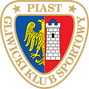

Najnowsze Informacje
PIAST GLIWICE


Informacje o klubie:
- Gliwicki Klub Sportowy Piast Spółka Akcyjna
- Data założenia: 18 czerwca 1945
- Adres: Okrzei 20, 44-100 Gliwice
- Stadion: Stadion Miejski - pojemność - 9 913 miejsc
- Prezes: Paweł Żelem (od 13 lipca 2017)
- Trener: Waldemar Fornalik (od 19 września 2017)


Napastnicy
Pomocnicy
Obrońcy
Bramkarze
Fanatics Zone
ZGODY
BATE Borysów
GKS Jastrzębie(układ)
KOSY
Górnik Zabrze